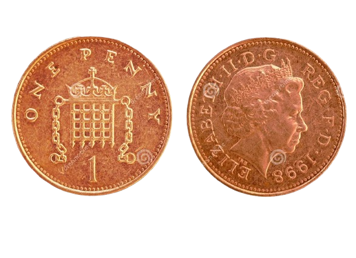
1 penny coin
The British decimal one penny (1p) coin is a unit of currency and denomination of sterling coinage worth 1⁄100 of one pound. Its obverse featured the profile of Queen Elizabeth II since the coin's introduction on 15 February 1971, the day British currency was decimalised, until her death on 8 September 2022
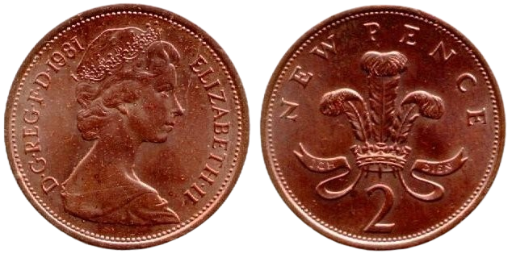
2 penny coin
The British decimal two pence coin (often shortened to 2p in writing and speech) is a denomination of sterling coinage equalling 2⁄100 of a pound. Since the coin's introduction on 15 February 1971, the year British currency was decimalised, its obverse has featured four profiles of Queen Elizabeth II.
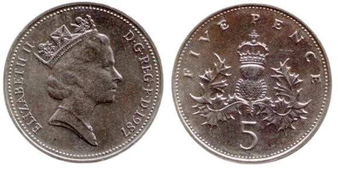
5 penny coin
The British decimal five pence coin (often shortened to 5p in writing and speech) is a denomination of sterling coinage worth 5⁄100 of a pound. Its obverse has featured the profile of the British monarch since the coin’s introduction on 23 April 1968, replacing the shilling in preparation for decimalisation in 1971.
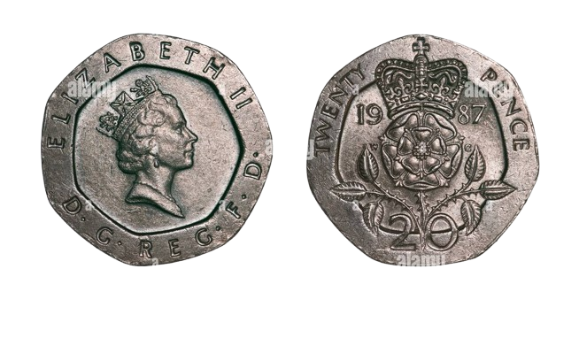
20 penny coin
The British decimal twenty pence coin (often shortened to 20p in writing and speech) is a denomination of sterling coinage worth 1⁄5 of a pound. Like the 50p coin, it is an equilateral curve heptagon. Its obverse has featured the profile of the British monarch since the coin's introduction on 9 June 1982.
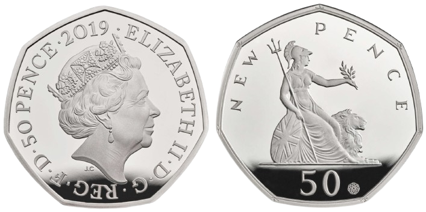
50 penny coin
The British decimal fifty pence coin (often shortened to 50p in writing and speech) is a denomination of sterling coinage worth 1⁄2 of one pound. Its obverse has featured the profile of the current British monarch since the coin's introduction in 1969. As of November 2024, six different royal portraits have been used.
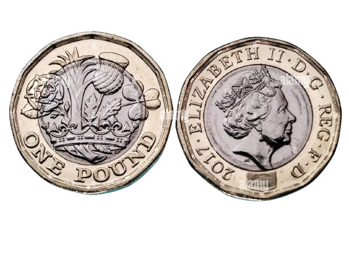
1 pound coin
The British one pound (£1) coin is a denomination of sterling coinage. Its obverse has featured the profile of Charles III since 2024 and bears the Latin engraving CHARLES III D G REX (Dei Gratia Rex) F D (Fidei defensor), which means 'Charles III, by the grace of God, King, Defender of the Faith'.
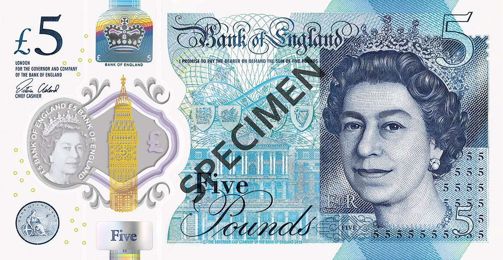
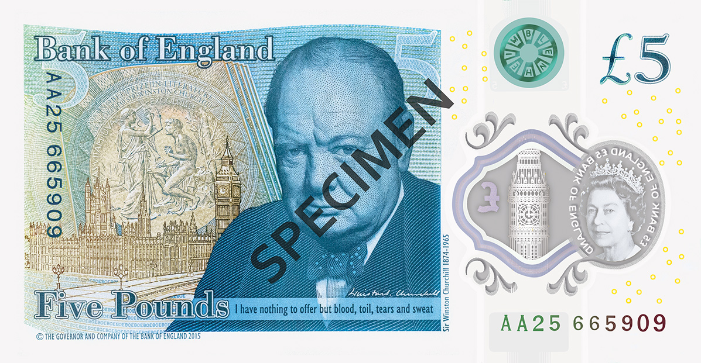
5 pound note
The British five pound (£5) coin is a commemorative denomination of sterling coinage. As of October 2022, the obverse of new coins feature the profile of King Charles III. The obverse previously depicted Queen Elizabeth II between the coin's introduction in 1990 and the Queen's death in 2022.
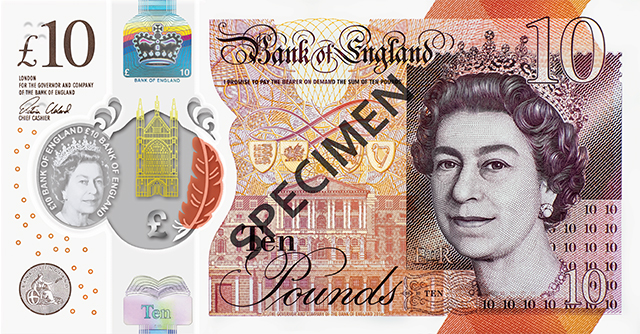
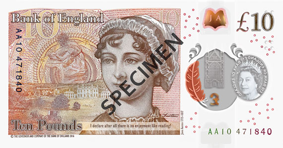
10 pound note
The ten pound coin (£50) is a commemorative denomination of sterling coinage. Issued for the first time by the Royal Mint in 2015 and sold at face value, fifty pound coins hold legal tender status but are intended as collectors' items and are not found in general circulation. 100,000 coins will be produced in limited edition presentation.
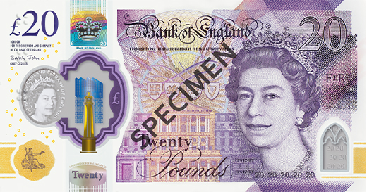
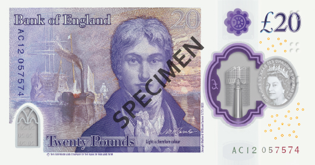
20 pound note
The British twenty pound (£20) coin is a commemorative denomination of sterling coinage, first issued by the Royal Mint in 2013. It is minted in .999 fine silver. Twenty pound coins are legal tender[3] but are intended as souvenirs and are almost never seen in general circulation.
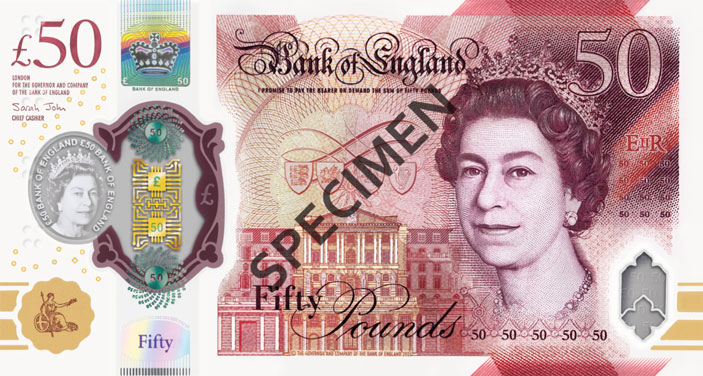
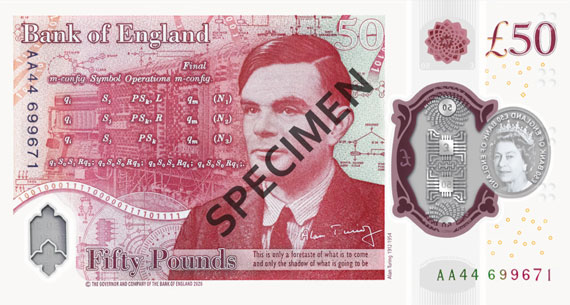